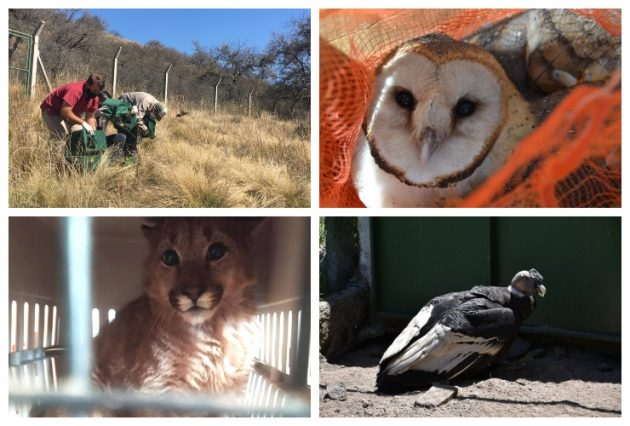
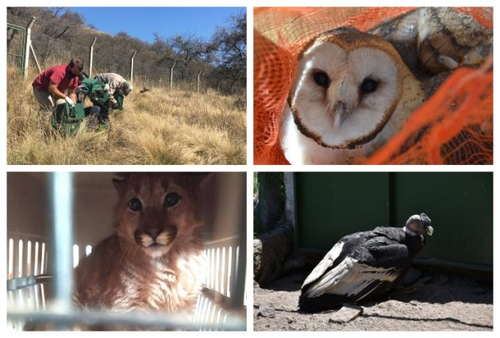

El Gobierno de San Luis recuperó a más de 300 animales silvestres durante el año 2021
En este sentido, a través de la Secretaría de Ambiente y Parques,
en conjunto con la Policía Ambiental, se desarrollan diversas acciones
para controlar y detectar el tráfico ilegal de animales. En esta dirección
durante el año 2021 se recuperaron 310 animales silvestres que forman parte
de los ecosistemas naturales sanluiseños, y también ejemplares que provienen
de otras provincias y fueron rescatados en suelo puntano. De los reptiles,
la especie que más ingresó fue la tortuga de tierra, uno de los ejemplares
que más sufre como consecuencia del comercio ilegal. Otro de los reptiles
ingresados transitoriamente, fue la especie exótica llamada Phyton albina,
que provino de un decomiso efectuado por la policía y se derivó al serpentario de Tigre.
Proceso de recuperación y cuarentena de los animales silvestres.
Una vez que los ejemplares ingresan al Centro de Conservación de Vida Silvestre:
se colocan en cuarentena en recintos aislados por 21 días, allí se les suministra
antibióticos y antiparasitarios. Durante este período, son mantenidos en observación
por el equipo técnico. Una vez que se encuentran en mejor estado físico-sanitario
y comportamental, son trasladados a recintos de rehabilitación de mayores
dimensiones para que comiencen a ejercitar la musculatura y así prepararlos
para la liberación en su ambiente natural.
En total 310 animales ingresaron al Centro de Conservación de Vida Silvestre (CCVS)
aves
87 %
mamíferos
6%
reptiles
7%
Los ejemplares fueron recuperados en distintos operativos realizados por
el equipo de la Secretaría de Ambiente y Parques, en conjunto con la Policía Ambiental.
 
